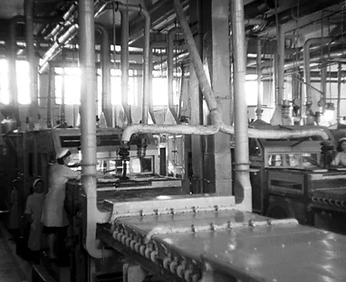
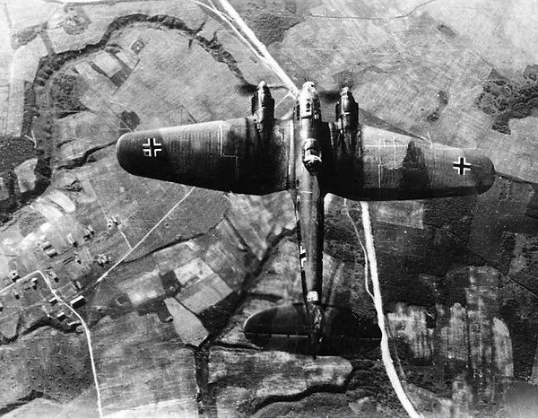

Майор Гаврилов

Одной из знаковых фигур начала Великой Отечественной войны считается уроженец села Альведино Лаишевского уезда Казанской губернии (сейчас – Пестречинский район) герой Советского Союза, участник обороны Брестской крепости Петр Гаврилов. Крещенный татарин по происхождению волей судьбы он выбрал для себя карьеру военного. Весной 1918 года, в возрасте 18 лет, вступил добровольцем в Красную Армию, сражался на Восточном фронте против войск Колчака. Участвовал в Советско-финской войне 1939-1940 годов, будучи командиром 44-го стрелкового полка. После войны полк был переведен в Брест. Майор Гаврилов руководил защитой Восточного форта Кобринского укрепления крепости. Около месяца горстка бойцов под командованием майора сдерживала продвижение почти целой немецкой дивизии. На 32-й день боев в крепости Гаврилов в бессознательном состоянии был захвачен в плен. Его история нашла отражение в кинофильме Александра Коршунова «Брестская крепость». Чудом оставшегося в живых майора спасли русские врачи лагерного госпиталя. В 1957 г., в период хрущевской оттепели, легендарный командир был реабилитирован и награжден «Золотой Звездой» Героя Советского Союза. Правда, умер он не в Татарстане, а в Краснодарском крае. Похоронен с воинскими почестями на гарнизонном мемориальном кладбище Бреста.
Казанская дивизия

Одной из первых удар немецко-фашистских войск на западной границе приняла уже успевшая повоевать в белофинскую 86-я стрелковая Казанская дивизия имени Президиума Верховного Совета Татарской АССР, которая располагалась около города Цехановец, сейчас польского. В первый же день город был потерян. Дивизия вела бои в окружении, в конец июня она была практически разгромлена, официально расформирована 19 сентября 1941 года.
Уроки от Гудериана

Другая дивизия, которая также по некоторым источникам носила название Казанской — 18-я стрелковая, накануне войны начала передислоцироваться на западную границу. К 22 июня 1941 года убыли 208-й стрелковый полк и большая часть других полков со штабами, однако к месту сосредоточения — Орше, армейское подразделение прибыло только 29 июня 1941 года и приняло участие в одном из самых кровопролитных сражений начала войны — Смоленском. 18-й дивизии досталось от 2-й танковой группы генерала Гудериана (того самого, что посещал Казань еще задолго до войны, об этом чуть ниже). Дивизия попала в окружение и ее остатки 22 июля прорвались к переправе через Днепр. Через неделю они присоединились к сводному отряду генерал-лейтенанта И. В. Болдина. Официально расформирована 19 сентября 1941 года.
Из пехоты в танкисты

В апреле 1941 года Казанское пехотное училище было преобразовано в Танковое училище. Основано оно было в 1919 году. Параллельно с этим с середины 1920-х годов под Казанью существовала немецкая бронетанковая школа «Кама». Подготовку на ней прошли около 40 офицеров рейхсвера. Руководил школой Йозеф Харпе, будущий генерал-полковник вермахта, в школе в качестве руководителя комиссии побывал Гейнц Гудериан.
Всеобщее обучение

Пока на западном фронте шли ожесточенные бои, и враг рвался к Москве, с осени 1941 года постановлением Госкомитета обороны было введено всеобщее обязательное обучение военному делу всех граждан страны (Всеобуч). В Татарстане за годы войны в семи очередях Всеобуча военные специальности получили 186 тысяч человек.
Карточки и мороженое в Казани

В это время страна все туже затягивала пояса. В большинстве регионов СССР к августу 1941 года была введена карточная система на отдельные виды продовольствия. Карточная система вводилась с августа по ноябрь 1941 года. С 1 сентября 1941 года были введены карточки на сахар, хлеб и кондитерские изделия, а с 1 ноября 1941 года – на мясо, рыбу, жиры, крупы, макароны. Карточки были двух видов – «хлебные» выдавались на день, а на остальные продукты карточки выдавались на месяц. При этом рабочие были разделены на две категории. Работавшим в военной промышленности полагалось по карточке 800 граммов хлеба, рабочим второй категории (вся остальная промышленность, а также транспорт и связь) – 600 граммов хлеба. Иждивенцы и дети до 12 лет – 400 граммов хлеба ежедневно. По «ежемесячным» карточкам для рабочих первой группы были следующие нормы: 2200 граммов мяса или рыбы, 600 граммов жиров, 1500 граммов крупы, 500 граммов сахара. Что интересно, старожилы Казани помнят, что в то время в городе было очень много мороженого: в Казань эвакуировали киевские холодильники.
Лента для фоторазведки
Казанская фабрика кинопленки (сейчас – производственное объединение «Тасма») во время Великой Отечественной войны была единственной действующей фабрикой в отрасли. В 1941 году фабрика начала производство аэрофотопленок. Доля фоторазведки а общей воздушной разведке выросла с 10% в начале Войны до 87% к концу войны.
Черный генерал

Даян Мурзин встретил войну в Прибалтике. В итоге, татарин по происхождению, родившийся в Уфимской губернии, практически всю войну провоевал на оккупированных территориях. Мурзин в 1942-1943 годах действовал на подпольной работе в Донбассе. В 1943 году организовал партизанский отряд имени Молотова, воевал на территории Украины, Молдавии, Словакии, Моравии, Чехии. Впоследствии окончил Казанскую юридическую школу, жил в Уфе. В 1944 году его забросили в Чехословакию. Он был сначала начальником штаба, а затем командиром интернациональной партизанской бригады имени Яна Жижки, в которую входили русские, чехи, словаки, поляки, англичане, итальянцы, венгры, румыны и американцы. Враги прозвали его «черным генералом» за густую черную бороду.
Министр обороны о татарах

Маршал Советского Союза, дважды Герой Советского Союза, министр обороны СССР в 1957-1967 годах Родион Малиновский так отзывался о солдатах-татарах: «Я, как старый солдат, много видел на фронте бойцов и командиров из татар и всегда восхищался их непреклонным упорством, железной волей в бою».
Побег на «Хейнкеле»
Даян Мурзин встретил войну в Прибалтике. В итоге, татарин по происхождению, родившийся в Уфимской губернии, практически всю войну провоевал на оккупированных территориях. Мурзин в 1942-1943 годах действовал на подпольной работе в Донбассе. В 1943 году организовал партизанский отряд имени Молотова, воевал на территории Украины, Молдавии, Словакии, Моравии, Чехии. Впоследствии окончил Казанскую юридическую школу, жил в Уфе. В 1944 году его забросили в Чехословакию. Он был сначала начальником штаба, а затем командиром интернациональной партизанской бригады имени Яна Жижки, в которую входили русские, чехи, словаки, поляки, англичане, итальянцы, венгры, румыны и американцы. Враги прозвали его «черным генералом» за густую черную бороду.